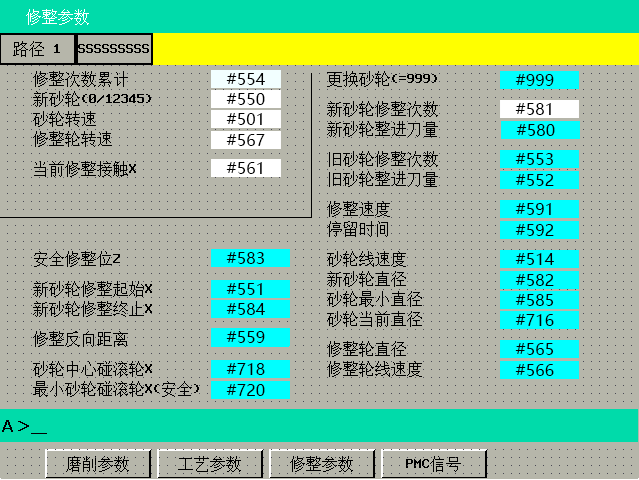

机床功能介绍
砂轮修整
具体参数设置请参考修整界面
新砂轮修整
- 打开修整界面

- 更换砂轮参数设置为：999
- 设置安全修整位Z，保证砂轮在Z轴方向不碰工件(35号后已取消此参数)
- 将砂轮与滚轮接触，设置新砂轮修整起始X，根据滚轮齿高，适当设置新砂轮修整终止X
- 设置修整反向距离，每修整一次会回退这段距离，可以设置为0
- 设置砂轮中心碰滚轮，此参数参与计算当前砂轮直径，需设置准确。此位置计算方法：新砂轮碰滚轮外沿坐标-齿高-砂轮半径
- 设置最小砂轮碰滚轮X，此参数为保护参数，修整到此坐标后程序报警
- 根据情况界面右侧其他参数
- 点亮修整键，启动程序。启动后会提示报警，直接复位后再次启动即可开始修整(不需再次修改新砂轮参数)
旧砂轮修整
- 设置旧砂轮修整次数和进刀量
- 点亮修整键后启动程序
磨削中修整
- 磨削中修整次数和进刀量在工艺界面下方设置